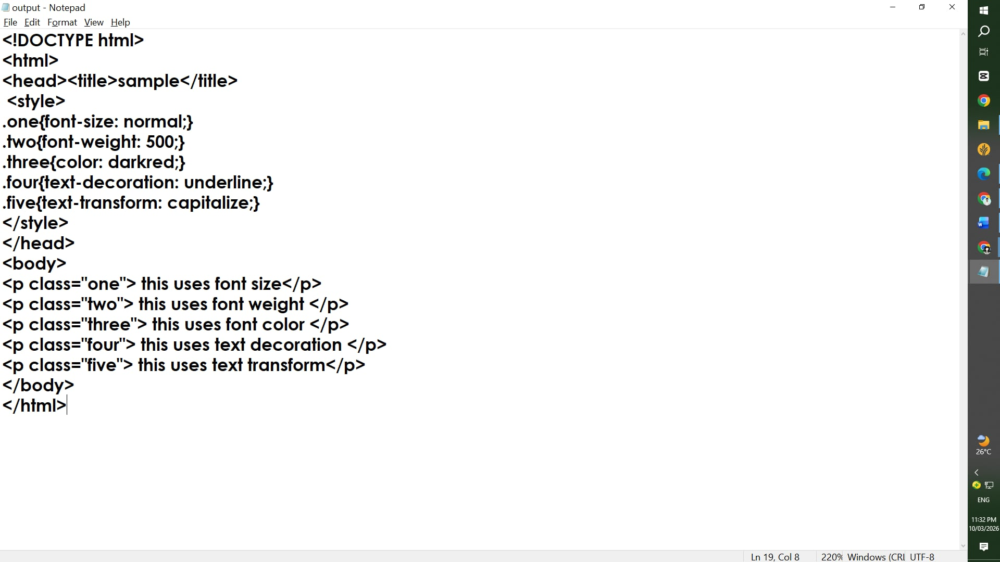
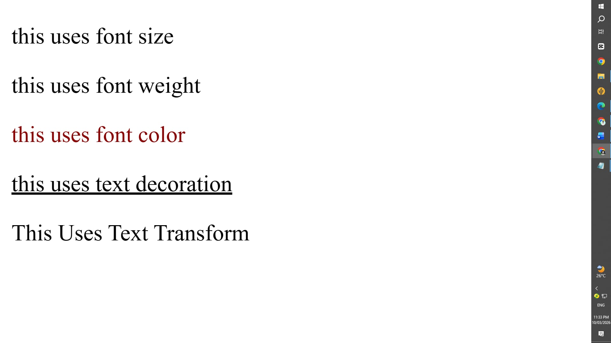
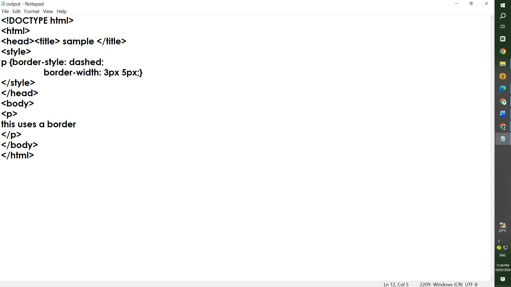
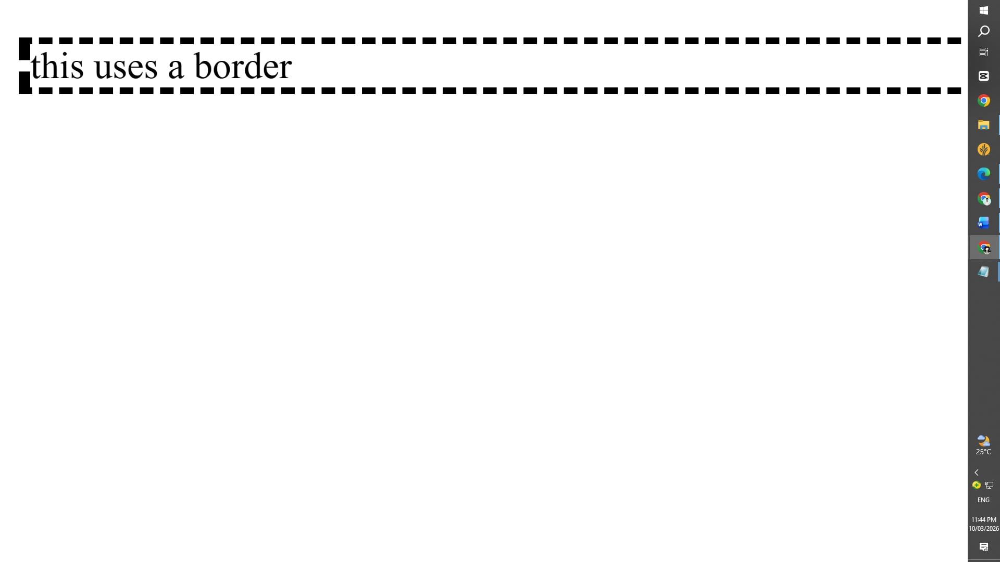
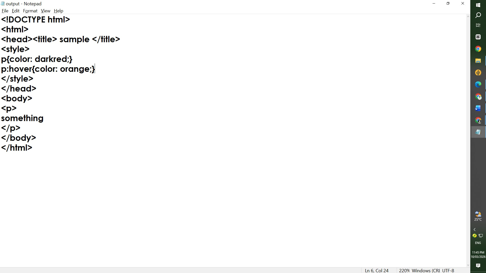
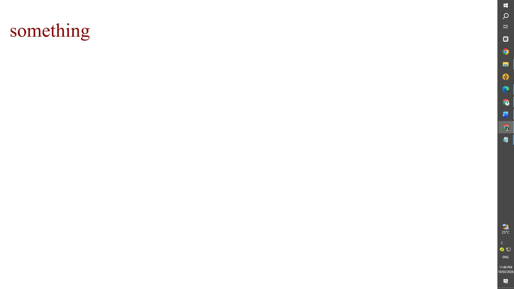
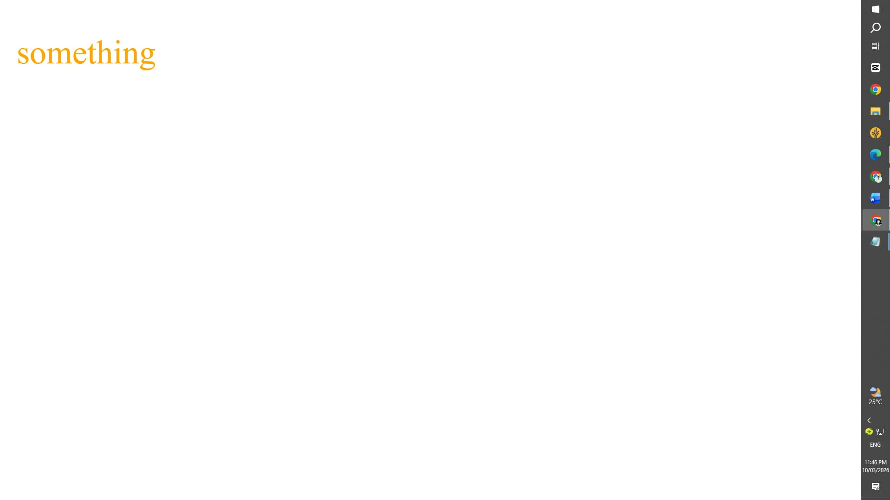

Third QTR Content
TYPOGRAPHY
This lesson was all about the use of typography; the art and technique of arranging typefaces, font styles, and text layout to make written language legible, readable, and visually appealing. It introduced various poperties that can be helpful for fomatting text in HTML. For me, it is very useful especially when designing a webpage because it allows you to have multiple versions of texts that you can use.


FORMATTING BORDERS
This lesson talks about the use of borders and their formatting. I learned that this is helpful to maintain a clean design for our webpages. It is also essential for seperating topics and helps the webpage look more organized and visually appealing.


PSEUDO-ELEMENTS
This lesson introduced the use of pseudo elements. These elements are useful because they create effects for certain elements when chosen. This is useful for designing and also creating a cleaner and well-organized website. These elements can be used for urls, images, texts, and so much more.


